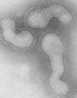
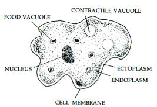
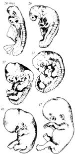

|
The title for The Roots of Consciousness was inspired by a statement by cosmologist Arthur M. Young who cautioned against seeking only the flowers of consciousness. Although flowers provide moments of pleasure and delight, they are forgotten after they wilt and die. The flowers of consciousness are the exquisitely intriguing foliage blooming in psychology's borderland -- telepathy, clairvoyance, precognition, psychokinesis, astral projection and other potential powers seemingly latent within us. These things may seem strange to western humanity's current ways of thinking -- or even non-existent. However, it is my intention in this book to explore the possibility that they are rooted in the essential core of our existence, in our cultural history and in our scientific knowledge. For me, the exploration of consciousness really has its origins in sparks of wonderment at my own existence which recur many times in different ways. These are the simplest experiences underlying the science of consciousness -- a newly emerging discipline which, like music, art, medicine or physical education, involves intense personal commitment as well as objective understanding. One of the profoundest speculations on the origins of consciousness occurs in a hymn from the Rig Veda, written over 3,000 years ago, in which the sages search their hearts for the personal, social and cosmic origins of being: Neither not being nor being was there at that time; there was no air-filled space nor was there sky which is beyond it. What enveloped all? Under whose protection? What was the unfathomable deep water?Let us examine the fundamental origins of being. There is the void, the absolute, darkness concealed in darkness, the unknown, that which is beyond. About the unknown void little can be said, although we say that this void permeates everything -- including the most solid-appearing objects. From this, according to the myth, through the power of heat was born the One. Regarding heat, the origin of the One, physics can shed some light. Heat is transmitted by particle-waves called photons in the infra-red area of the electromagnetic spectrum. All electromagnetic interactions from radio waves and light to cosmic rays are mediated by photons. This idea perhaps correlates with other creation myths, including the version in Genesis, which states that light was the first manifestation from the void. Photons are the basic quantum unit of the action of electromagnetic radiation. They have no mass and no charge. They travel through space at 186,000 miles per second with no loss in energy until they collide with other particles. Imagine that you are a photon travelling through space at the speed of light. If you were to look at your watch, you would, according to the theory of relativity discover that time was standing still. Hence you could travel to the very edges of the known universe without aging a single day, although, to an observer on earth, it would take you three billion years to get there. Thus photons, tiny particle-waves with no mass, no charge, no time, neither matter nor anti-matter, but with a unit spin, constitute one of the basic units of action in physics. In the seventeenth century, the principle of least action was discovered to be true of light -- and subsequently found to apply to almost all physical phenomena. This principle states that light always follows the path that gets it to its destination in the shortest possible time. Photons are also subject to Heisenberg's principle of uncertainty or indeterminacy. This means that it is impossible to predict the destination of any given photon, and has led physicists to describe these wave-particles as "packets of uncertainty." Any given uncertainty packet is theoretically located everywhere in the universe, with the probability densities being greater for some particular space-time coordinates. This idea of unpredictability represents a breakdown of the nineteenth century notion of a mechanical determinism governing all of nature -- including human consciousness. Now scientists are beginning to see that the process of observation itself influences the universe. Because this is problematic in the context of current theories, physicists are beginning to search for a new understanding. Photons, like all known physical phenomena, pulsate or vibrate. Planck's law states that the photon's energy is directly proportional to the frequency of its vibration. The constant of proportionality between the energy of photons and the frequency of vibration is known as Planck's Constant, or h, which is a very important unit in describing wholeness as well as indeterminacy in physics. It, like the other constants in physics, is suggestive of the Pythagorean notion that the underpinnings of the physical universe are mathematical in nature. A photon, when it is annihilated, is able to create particles of matter and anti-matter which have both mass, charge, and time, such as electrons and positrons, or protons and anti-protons. It is tempting to suggest that these particles with their charges represent the principle of desire or attraction, which in the Vedic myth arose from the One. Protons and electrons, of course, are attracted to each other and form the basic constituents of atoms and molecules. Electrons have a negative charge and protons, which are much heavier, have a positive charge. Positrons and anti-protons are particles of what is called anti-matter. In an atom of anti-matter, the light weight positrons orbit around a nucleus that contains negatively charged anti-protons. When particles of matter and anti-matter come into contact with each other, they are annihilated and photons are produced. Physicists suggest that particles of anti-matter move backward through time -- like a movie played backward. As the extreme energy of the photons becomes somewhat solidified in the form of the mass of protons and electrons and their anti-matter counterparts, the amount of free energy these particles possess is accordingly reduced. Also the amount of indeterminacy, or unpredictability of these particles, while still great, is less that of the photon. According to Heisenberg's uncertainty principle, the product of uncertainty of the position and momentum of these particles is equal to or greater than Planck's Constant, h. In other words, the more certain you are of the position of a particle, the less certain you can be of its momentum, and vice-versa. Of course, protons and electrons combine to form atoms which have even greater mass and less indeterminacy. There are 106 known different kinds of atoms whose identity is determined by the number of charged particles that have come together. These atoms compose the elements of the periodic table that combine chemically into molocules to form all of the substances we experience in our day-to-day living. The indeterminacy atoms and molecules exhibit is limited to the amounts of energy they can absorb and release and the times at which they release and absorb this energy, which is in the form of photons. This indeterminacy though very small is real. Consequently scientists no longer believe atoms and molocules generally behave exactly like the predictable billiard balls of nineteenth century physics. The particles, atoms and molecules of the universe combine to form the stars and the planets and newly discovered fantastic structures in outer-space whose origins and properties are still mysterious to us. The expansion of the universe, the nature of the black holes, and the nature of quasars all imply notions of time, space and matter foreign to the rules of classical Newtonian physics that generally apply in daily life. The small amount of uncertainty that remains in molocules may play an important role in the curious growth properties polymers display. These long molecular chains --such as rubber, cellulose and nylon -- seem to anticipate the growth of cellular life itself. Functional polymers such as proteins are the primary constituents of animal life; and the proteins actin and myosin, the primary ingredients of muscle tissue, exhibit properties of animal mobility. Perhaps the most important molecule of all is deoxyribosenucleic acid or DNA. These complex molecules contain in their double-helix structure the information necessary for living cells to grow and function. Some scientists say these molecules contain within their structure all of the information necessary for the complete development of an organism, such as the human being. This has yet to be proven; however a single DNA molecule can store much more information than is contained in this book. When cells divide, DNA molecules also divide in two and are able to reproduce themselves. DNA molecules are able to transcribe the information they contain onto other molecules of ribonucleic acid or RNA. Certain very complex molecules of DNA or RNA combined with protein, called viruses, actually seem to be alive and can reproduce themselves when they are inside of another living organism. However these viruses are quite inert in the free state.  influenza virus Although science has not yet filled in all of the links in the process of evolution, one can sense a naturalness in the emergence of cellular life from a sea of complex molecules. Unicellular organisms constitute the majority of living creatures on earth.  single-celled organism Microscopic structures within these cells, called organelles, perform the digestive, respiratory, metabolic and reproductive functions of the organism. While the cells are said to be alive (although this is perhaps questionable in the case of the virus), the organelles themselves are not. When similar kinds of cells group together, colonies are formed -- such as fungi or algae or sponges. Several different types of cells coming together lead to the formation of different tissues within each organism. In more complex creatures, these tissues have joined further into units called organs. The most complex organisms contain not only many tissues and organs, but groups of organs may also form one or more structural organizations called organ systems. Ontogeny recapitulates phylogeny. This means the growth of any individual organism, from conception, follows the same pattern of development as the evolution of that species. Thus when you were an embryo you passed through all the stages of growth in a nine month period that led to humanity's three billion year evolution from a single-celled organism.  the growth of a human embryo ontogeny recapitulates phylogeny Beyond organisms of all kinds, higher levels of life may be distinguished in the form of social groupings such as families, hives, tribes, societies, populations, species, and local communities. The sum of all living communities represents the ecological system of the planet -- which in turn interacts with the solar system, galaxy and, indeed, the known universe. Human cultural history goes back about five thousand years; however the existence of the homo sapiens species can be traced back at least 500,000 years. Thus in some sense it can be said that humanity has evolved through qualitative changes of consciousness during the life of our species. Human beings seem to exhibit free will, a phenomenon reminiscent of the unpredictability photons and sub-atomic wave-particles display. From the evolution of the universe we have
just briefly traced, there seems to emerge patterns, pulsations, vibrations
and cycles. The loss of uncertainty, the entrapment of spirit in matter
as we descend from the photon to the molecule, seems to be balanced by
the increased freedom, the rise of matter into spirit, as we ascent through
the plant, animal and human kingdoms. The orchestration of the universe
is a most complex and subtle symphony. This book, this moment, is a small
part of the harmony of the universe as it comes to understand itself.
References . Rig Veda 10.129 in W. T. de Bary (ed.), Sources of Indian Tradition, Vol. 1. New York: Columbia University Press, 1961. . Arthur M. Young, The Reflexive Universe. New York: Delacorte, 1975. Young's theory, which is outlined in more detail in Section IV, suggest a mathematical process linking science and mythology. |